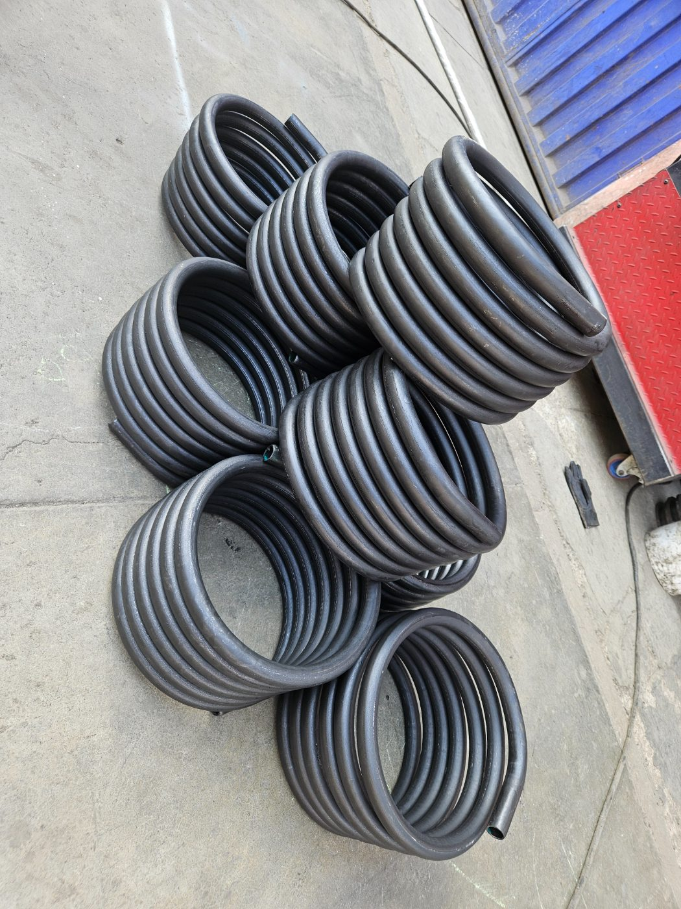
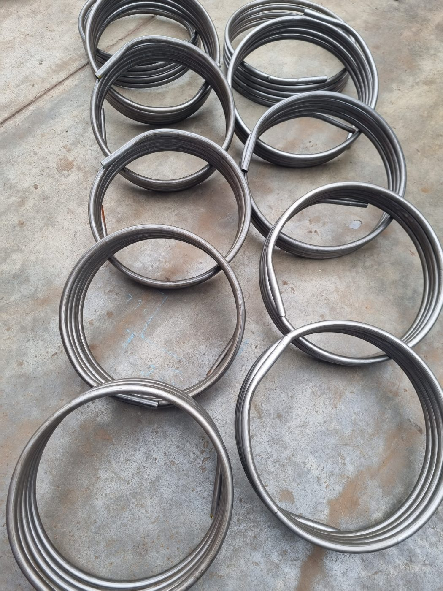
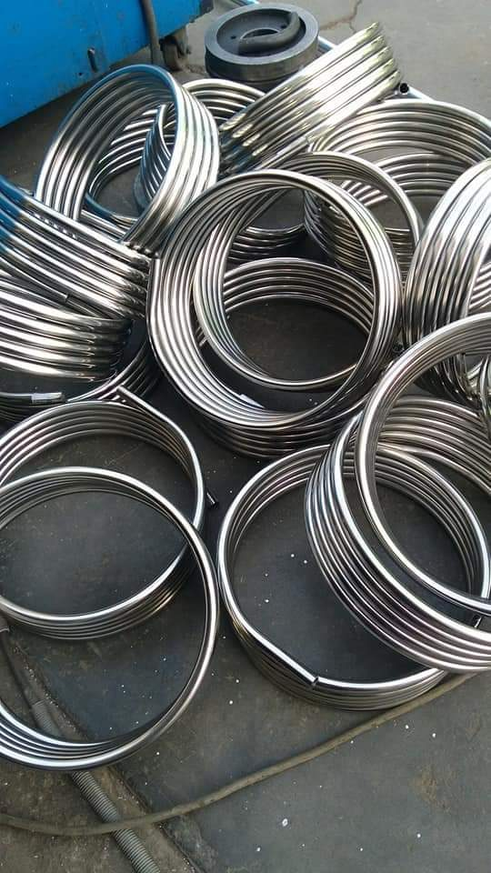

Los tubos schedule, de pared más gruesa, se usan en estructuras que cargan peso, barandas industriales, soportes, líneas de tubería y equipos. Curvarlos exige máquina con fuerza y control, y es justo lo que hacemos en CEFRO Doblez y Rolado.
Doblamos tubos de hasta 3 pulgadas y rolamos tubos de hasta 4.5 pulgadas. Dependiendo del espesor, le indicamos cuál es el radio más cerrado que se puede lograr sin dañar el tubo.

Para qué sirve
- Aros y espirales de tubo
- Curvas para estructuras y soportes
- Barandas y pasamanos industriales
- Piezas para maquinaria y mobiliario metálico
Qué trabajamos
- Tubos schedule de acero
- Doblez hasta 3 pulgadas
- Rolado hasta 4.5 pulgadas
- Consúltenos el espesor y el radio que necesita
Fotos de nuestros trabajos




Cómo pedir su cotización
- Escríbanos por WhatsApp al 992 550 533 o 986 745 493.
- Envíe los datos: medida del tubo o perfil, radio o ángulo, cantidad y una foto o croquis.
- Le cotizamos y coordinamos plazo y entrega o recojo en Independencia.
Otros servicios
Techos parabólicos
Ver más →Doblez de tubos
Ver más →Rolado de tubos
Ver más →Servicio de soldadura
Ver más →Rolado de tubo rectangular y cuadrado
Ver más →Tubos curvados para barandas y pasamanos
Ver más →Rolado de ángulo, platina y canaletas
Ver más →Arcos para techos parabólicos y coberturas
Ver más →Doblez y rolado de tubos en Lima Norte
Ver más →Preguntas frecuentes
¿Doblan tubos schedule?
Sí. Trabajamos tubos schedule: doblez de hasta 3 pulgadas y rolado de hasta 4.5 pulgadas. El radio mínimo depende del espesor del tubo, así que nos conviene que nos envíe la medida exacta.
¿Cuál es la diferencia entre doblar y rolar?
Doblar hace una curva cerrada en un tramo corto del tubo. Rolar hace una curva amplia y continua, por ejemplo un arco o un aro completo.
¿Pueden hacer aros completos?
Sí. Rolamos aros y espirales de tubo en varias medidas. Indíquenos el diámetro del aro y la cantidad.